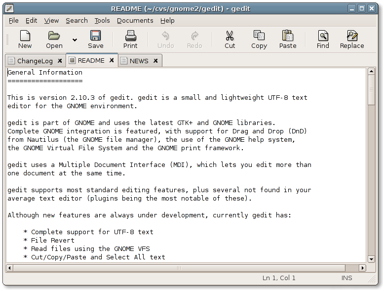
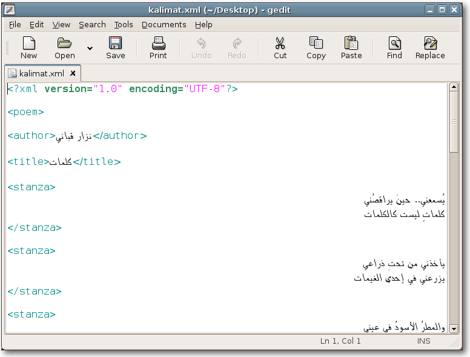

gedit's main window, showing its tabbed multi document interface:

gedit showing its colorful syntax highlighting:
gedit showing UTF-8 support:

Downloads
The latest releases can always be found at the GNOME ftp site.
The latest stable release is 2.8.2 (release notes).
The current unstable release for developers and testers is 2.9.6 (release notes).
Feedback
Bugs should be reported to the GNOME Bug Tracking System.
You can get in touch with developers and other users by sending a mail to the gedit mailing list [Archives] or by joining the #gedit channel on irc.gnome.org.